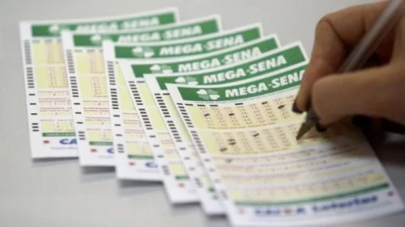

Mega-Sena: quatro apostas do DF fazem a quina e faturam R$ 41 mil
 SAIBA MAISCasas de apostas que aceitam Pix: veja a nossa seleção de sites com este método
Por isso, não é surpresa para ninguém que as melhores casas de apostas estejam investindo nesta forma de pagamento. E, é claro, além dele, é comum em alguns sites de apostas a disponibilidade de métodos como transferência bancária, boleto e outros. Por isso, vamos falar sobre as casas de apostas que aceitam Pix.
SAIBA MAISAPRENDA A APOSTAR NOS MELHORES SITES DE APOSTAS!
 SAIBA MAIS
SAIBA MAIS